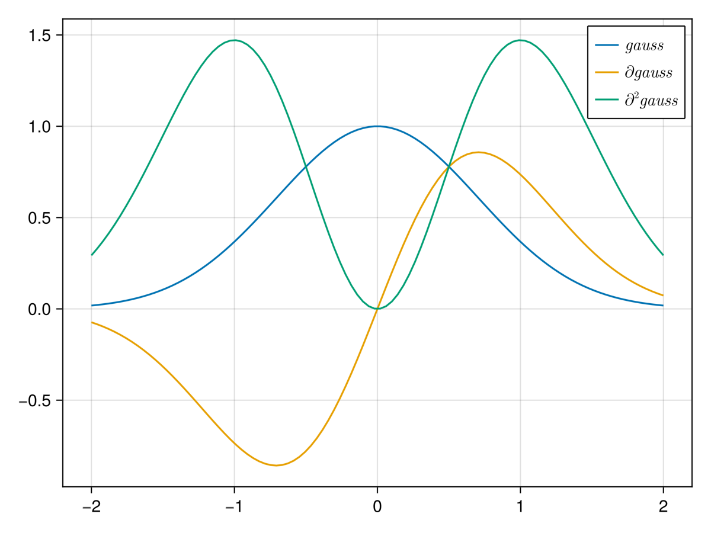
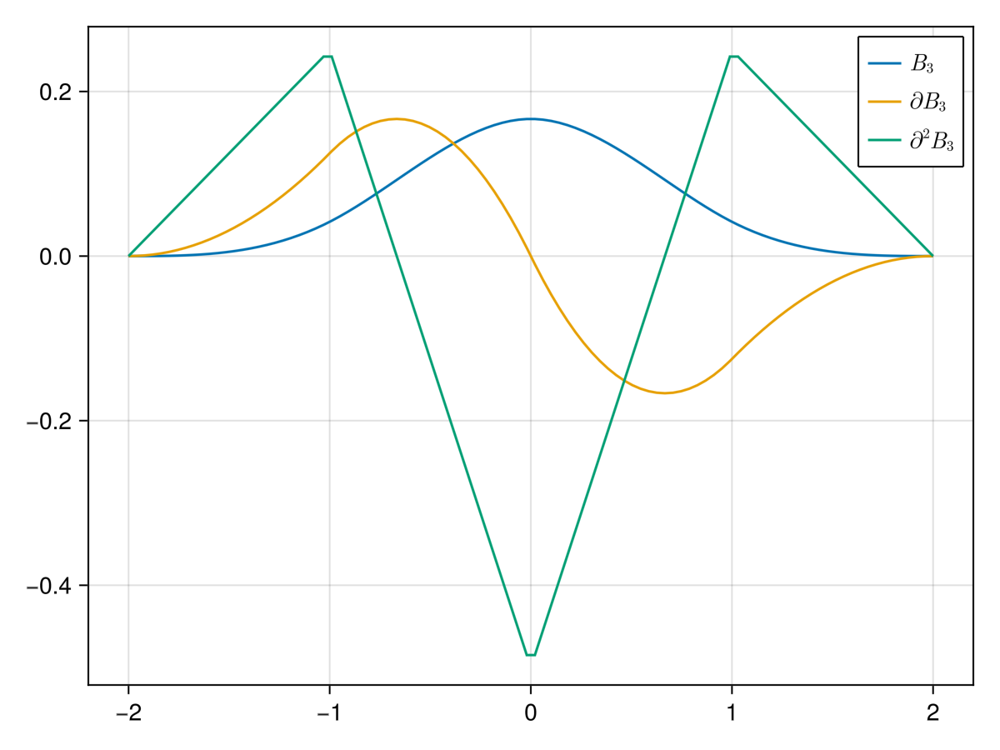
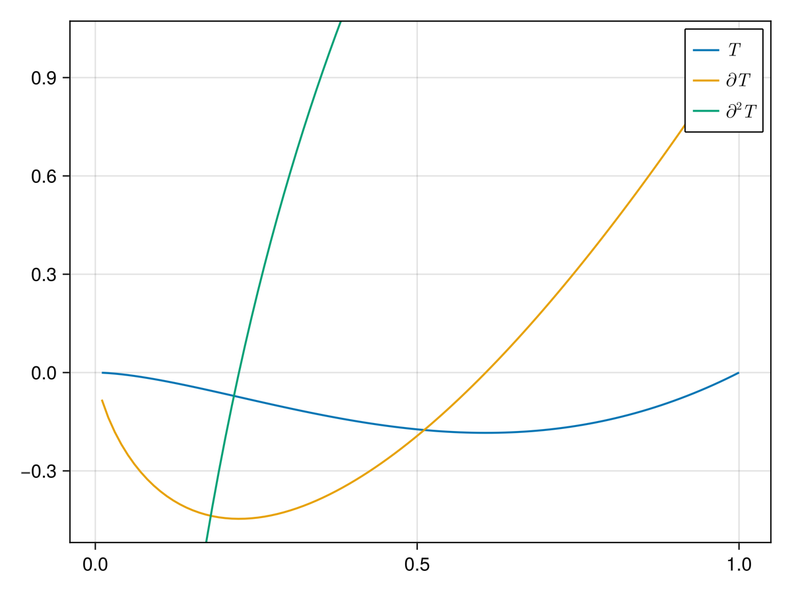
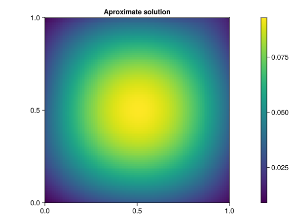
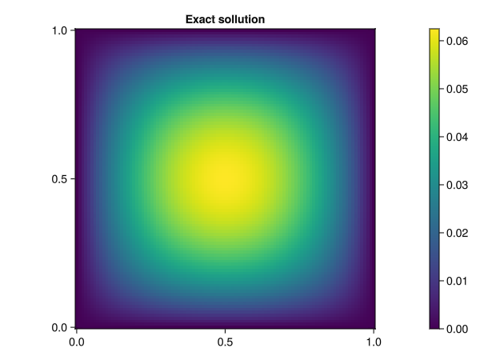

Kernel Collocation Excercise
Table of Contents
1. Regression Approach
Aim of this excrcise is to find solutions \(u\in \mathcal{H}_k\) such that they satisfy the following system
\begin{align} \label{eq:pde} - \nabla \cdot \left( a(x) \nabla u(x) \right) &= f(x) & \text{in} \quad \Omega \\ u(x) &= g_D(x) & \text{on} \quad \Gamma_D \\ \left( a(x) \nabla u(x) \right) \cdot \vec{n}(x) &= g_N & \text{on} \quad \Gamma_N \end{align}we do this by projecting the system onto \(\mathcal{H}_k(\Omega)\)
\begin{align} \label{eq:pde_proj} \left< - \nabla \cdot \left( a(x) \nabla u(x) \right),\phi \right>&= \left< f(x) ,\phi \right> & \text{in} \quad \Omega , \phi \in \mathcal{H}_{k} \\ \left< u(x) , \phi \right>&= \left< g_D(x) , \phi \right> & \text{on} \quad \Gamma_D \\ \left< \left( a(x) \nabla u(x) \right) \cdot \vec{n}(x) , \phi \right>&= \left< g_N ,\phi \right> & \text{on} \quad \Gamma_N \end{align}Let \( \hat{X}:=\left\{ x_j \right\}_{j=1}^n \subset\RR ^d\). Since \(\left\{ k(x_i,\cdot ) \right\}_{i=1}^n\) is a basis of \(\mathcal{H}_k\) it also has to hold
\begin{align} \label{eq:pde_proj} \left< - \nabla \cdot \left( a(x) \nabla u(x) \right),k(x_i,\cdot ) \right>&= \left< f(x) ,k(x_i,\cdot ) \right> & \text{in} \quad \Omega , x_i \in X \\ \left< u(x) , k(x_i,\cdot ) \right>&= \left< g_D(x) , k(x_i,\cdot ) \right> & \text{on} \quad \Gamma_D \\ \left< \left( a(x) \nabla u(x) \right) \cdot \vec{n}(x) , k(x_i,\cdot ) \right>&= \left< g_N , k(x_i , \cdot ) \right> & \text{on} \quad \Gamma_N \end{align}We assuming \(f,g_D , g_N(\cdot ,\vec{n}) \in \mathcal{H}_k\) i.e. \(\left< f , k(x_i , \cdot ) \right> = f(x_i)\) etc. We search for a finite approximation \(u_h \approx u\) such that it satisfies \eqref{eq:pde_proj} where
\begin{align} \label{eq:approx} u_h(x) &= \sum_{j=1}^{n} a_j k(x_j,x) \end{align}correspondingly we are able to directly compute
\begin{align*} \nabla_x u_h(x) &= \sum_{j=1}^n a_j \nabla_x k(x_j ,x) \\ - \nabla_x \cdot \left( a(x) \nabla_x u_h(x) \right) &= - \nabla_x a(x) \cdot \nabla_x u(x) - a(x) \Delta_x u(x) \\ &= - \sum_{j=1}^{n} a_j \left( \nabla_x a(x) \cdot \nabla_x k(x_j,x) + a(x) \Delta_x k(x_j,x)\right) \end{align*}this leads to the following Linear system
\begin{align} \label{eq:pde-sys} - \sum_{j=1}^{n} a_j \left( \nabla_{x_i} a(x_i) \cdot \nabla_{x_i} k(x_j,x_i) + a(x_i) \Delta_{x_i} k(x_j,x_i)\right)&= f(x_i) & x_i\in \Omega , x_i \in X \\ \sum_{j=1}^{n} a_j k(x_j,x_i)&= g_D(x_i) & x_i\in \Gamma_D \\ \sum_{j=1}^n a_j \left( a(x_i) \nabla_{x_i} k(x_j ,x_i) \cdot n_i \right) &= g_N(x_i , n_i) & x_i \in \Gamma_N \end{align}this corresponds directly with the System Matrix \(K\), that we compute in julia using a GPU copatible kernel that employs element wise notation
@kernel function system_matrix!(K ,@Const(X), a , ∇a ,k, ∇k, Δk , sdf , grad_sdf , sdf_beta) Iᵢⱼ = @index(Global , Cartesian) @inbounds xᵢ= SVector{2}(view(X, : , Iᵢⱼ[1])) # Essentially X[:,i] @inbounds xⱼ= SVector{2}(view(X, : , Iᵢⱼ[2])) # Essentially X[:,j] # poisson equation @inbounds K[Iᵢⱼ] = -a(xᵢ)*Δk(xᵢ,xⱼ)- ∇a(xᵢ)⋅∇k(xᵢ,xⱼ) if abs(sdf(xᵢ)) < 1e-10 if sdf_beta(xᵢ) < 0 # Neumann Boundary Condition @inbounds nᵢ= grad_sdf(xᵢ) @inbounds K[Iᵢⱼ] = a(xᵢ) * (nᵢ ⋅ ∇k(xᵢ , xⱼ)) else # Dirichlet Boundary @inbounds K[Iᵢⱼ] =k(xᵢ , xⱼ) end end end
1.1. right hand side
The right hand side of the system is computed in a similar Fashion
@kernel function apply_function_colwise!(B ,@Const(X) , f , g_D , g_N , sdf , grad_sdf, sdf_beta) # boilerplate Iᵢ = @index(Global , Cartesian) @inbounds xᵢ= SVector{2}(view(X , : , Iᵢ[1])) # poisson equation @inbounds B[Iᵢ] = f(xᵢ) if abs(sdf(xᵢ)) < 1e-10 if sdf_beta(xᵢ) < 0 # Neumann Boundary Condition @inbounds nᵢ= grad_sdf(xᵢ) @inbounds B[Iᵢ] = g_N(xᵢ , nᵢ ) else # Dirichlet Boundary @inbounds B[Iᵢ] = g_D(xᵢ) end end end
2. Solver
struct PDESystem k :: Function ∇k :: Function Δk :: Function a :: Function ∇a::Function f::Function g_D::Function g_N::Function sdf::Function grad_sdf::Function sdf_beta::Function end struct PDESolver S::PDESystem X::AbstractMatrix α :: AbstractVector end function (f::PDESolver)(X) dev = get_backend(X) print("Backend" , dev) K = KernelAbstractions.zeros(dev , Float32, size(X,2) , size(f.X ,2)) print("Size of the system Matrix:" , size(K)) kernel_matrix! = dirichlet_matrix!( dev , 256 , size(K)) kernel_matrix!(K, X , f.X , f.S.k ) return K * f.α , K end function solve(S, X_col) dev = get_backend(X_col) K = KernelAbstractions.zeros(dev , Float32 , size(X_col , 2) , size(X_col , 2) ) sys_matrix! = system_matrix!( dev , 256 , size(K)) sys_matrix!(K ,X_col , S.a , S.∇a , S.k , S.∇k , S.Δk , S.sdf , S.grad_sdf , S.sdf_beta ) B = get_boundary(S,X_col) α = lsqr(K,B) return (PDESolver(S,X_col ,α) , K) end function get_boundary( S, X ) dev = get_backend(X) B = KernelAbstractions.zeros(dev , Float32 , size(X , 2)) apply! = apply_function_colwise!(dev , 256 , size(B)) apply!(B , X , S.f , S.g_D , S.g_N , S.sdf , S.grad_sdf, S.sdf_beta) return B end
end
3. Kernel Implementation
As kernels we use Radial Basis Kernels (RBF) \(k(x,x') := \phi (\frac{\|x-x'\|}{\gamma})\). That consist of a radial basis function \(\phi \) as well as a scaling factor \(\gamma \) where \(\nabla_x , \Delta_x\) are the partial gradients and laplacians with respect to the second argument of \(k(x_j, \cdot )\). for a radial basis function \(\phi (r^2) \in C^2(\RR)\) and a corresponding RBF kernel they can be computed trivially
\begin{align} \label{eq:2} \nabla_x k(x',x) &= \phi'\left(\frac{\|x - x'\|}{\gamma}\right) \cdot \frac{x - x'}{\gamma\|x - x'\|} \\ \Delta_x k(x',x) &= \frac{1}{\gamma^2} \phi''\left(\frac{\|x - x'\|}{\gamma}\right) + \frac{1}{\gamma^{2}} \frac{d - 1}{\|x - x'\|} \cdot \phi'\left(\frac{\|x - x'\|}{\gamma}\right) \end{align}where \(d\) is the dimension of \(x\)
using StaticArrays function k(ϕ::Function , γ,x̂::SVector{N} ,x::SVector{N}) where N r = max(1e-15,norm(x-x̂)) ϕ(r/γ) end function ∇k(dϕ::Function , γ ,x̂::SVector{N} ,x::SVector{N}) where N r = max(1e-15,norm(x-x̂)) 1/γ * (x-x̂)/r*dϕ(r/γ) end function Δk(d²ϕ::Function, dϕ::Function , γ ,x̂::SVector{N} ,x::SVector{N}) where N r = max(1e-15,norm(x-x̂)) 1/γ^2 * d²ϕ(r/γ) + 1/γ * (N-1)/r *dϕ(r/γ) end
Δk (generic function with 1 method)
3.1. squared rbf
for a squared RBF the kernels are simpler. and non singular
\begin{align} \label{eq:sqr-rbf} \nabla_x k(x',x) &= \phi'\left(\frac{r^2}{\gamma}\right) \cdot \frac{x - x'}{\gamma} \\ \Delta_x k(x',x) &= \frac{1}{\gamma } (4 * \frac{r^2}{\gamma^2} \phi''\left(\frac{r^2}{\gamma}\right) + 2d\phi'\left(\frac{r^2}{\gamma}\right)) \end{align}using StaticArrays function ksq(ϕ::Function , γ,x̂::SVector{N} ,x::SVector{N}) where N r = dot(x-x̂,x-x̂) ϕ(r/γ) end function ∇ksq(dϕ::Function , γ ,x̂::SVector{N} ,x::SVector{N}) where N r = dot(x-x̂,x-x̂) 2/γ*(x-x̂)*dϕ(r/γ) end function Δksq(d²ϕ::Function, dϕ::Function , γ ,x̂::SVector{N} ,x::SVector{N}) where N r = dot(x-x̂,x-x̂) (4*r/γ^2 * d²ϕ(r/γ) + 2/γ *N*dϕ(r/γ)) end
Δksq (generic function with 1 method)
3.2. Gauss
using StaticArrays function rbf_gaussian(r) exp(-r) end function d_rbf_gaussian(r) -exp(-r) end function dd_rbf_gaussian(r) exp(-r) end
dd_rbf_gaussian (generic function with 1 method)
using GLMakie X = range(-2 , 2 , 100) Y = range(-5 , 5 , 100) using LinearAlgebra fig = Figure() ax = Axis(fig[1,1]) lines!(X , x->rbf_gaussian(x^2)) save("images/gauss-rbf.png",fig )

3.3. Cardinal B3 Spline
function B_3(r) r_prime = r+2 return 1/24 * ( 1 *max(0, (r_prime - 0))^3 -4*max(0, (r_prime - 1))^3 +6*max(0, (r_prime - 2))^3 -4*max(0, (r_prime - 3))^3 +1*max(0, (r_prime - 4))^3 ) end function d_B_3(r) r_prime = r+2 return 1/8 * ( 1 *max(0, (r_prime - 0))^2 -4*max(0, (r_prime - 1))^2 +6*max(0, (r_prime - 2))^2 -4*max(0, (r_prime - 3))^2 +1*max(0, (r_prime - 4))^2 ) end function dd_B_3(r) r_prime = r+2 return 1/4 * ( 1 *max(0, (r_prime - 0)) -4*max(0, (r_prime - 1)) +6*max(0, (r_prime - 2)) -4*max(0, (r_prime - 3)) +1*max(0, (r_prime - 4)) ) end
using GLMakie using LaTeXStrings X = range(-2 , 2 , 100) Y = range(-2 , 2 , 100) fig = Figure() ax = Axis(fig[1,1]) lines!(ax , X , B_3 , label=L"B_3") lines!(ax , X , d_B_3 , label=L"\partial B_3") lines!(ax , X , dd_B_3 , label=L"\partial^2 B_3") axislegend(ax) save("images/b-spline.png",fig )

3.4. Thin Plate
function thin_plate(r) r == 0.0 && return 0.0 return 0.5* r * log(r) end function d_thin_plate(r) r == 0.0 && return 0.0 return 0.5 * log(r) + 1 end function dd_thin_plate(r) r == 0.0 && return 0.0 return 0.5 * 1/r end
dd_thin_plate (generic function with 1 method)
using GLMakie X = range(0 , 1 , 100) Y = range(-5 , 5 , 100) fig = Figure() ax = Axis(fig[1,1]) lines!(ax , X , thin_plate) save("images/plate-spline.png",fig )

4. PDE
using Revise includet("src/pdesolver.jl") includet("src/domains.jl") using .PDESolvers using .Domains
4.1. PDE Poisson
with \(a(x) = 1 , g_{D}(x) = 0\) and \(\Gamma_{N} = \emptyset \) this method is able to model the poisson equation
\begin{align} \label{eq:poisson} - \Delta u(x) &= f(x) & \text{in} \quad \Omega \\ u(x) &= 0 & \text{on} \quad \Gamma_D \end{align}using StaticArrays function domain(x::SVector{2}) return sdf_square(x , 0.5 , SVector(0.5,0.5)) end function ∇domain(x::SVector{2}) return sdf_square_grad(x , 0.5 , SVector(0.5,0.5)) end function sdf_β(x::SVector{2}) return sdf_square(x , 0. , SVector(-1.,-1) ) end a(x::SVector{2}) = 1 ∇a(x::SVector{2}) = SVector{2}(0.,0.) f(x::SVector{2}) =2 * (x[1]+x[2] - x[1]^2 - x[2]^2) g_D(x::SVector{2})= 0 g_N(x::SVector{2} , n::SVector{2}) = 0
X = range(0 , 1 , 100) Y = range(0 , 1 , 100) X_col = [ [x,y] for x in X , y in Y] X_col = reduce(vcat ,X_col ) X_col = reshape(X_col, 2,:) X_t = range(0 , 1 , 100) Y_t = range(0 , 1 , 100) X_test = [ [x,y] for x in X_t , y in Y_t] X_test = reduce(vcat , X_test) X_test = reshape(X_test, 2,:) size(X_col)
(2 10000)
4.1.1. Result
γ = 0.05 k_gauss(x,y) = ksq( rbf_gaussian ,γ, x,y) ∇k_gauss(x,y) =∇ksq(d_rbf_gaussian,γ , x,y) Δk_gauss(x,y) = Δksq(dd_rbf_gaussian , d_rbf_gaussian ,γ, x,y) S_gauss = PDESystem(k_gauss , ∇k_gauss , Δk_gauss , a, ∇a , f, g_D ,g_N , domain , ∇domain , sdf_β )
k_plate(x,y) = ksq(thin_plate ,γ , x,y) ∇k_plate(x,y) =∇ksq(d_thin_plate ,γ , x,y) Δk_plate(x,y) = Δksq(dd_thin_plate , d_thin_plate ,γ, x,y) S_plate = PDESystem(k_plate , ∇k_plate , Δk_plate , a, ∇a , f, g_D ,g_N , domain , ∇domain , sdf_β )
γ = 0.01 k_bspline(x,y) = k(B_3,γ , x,y) ∇k_bspline(x,y) =∇k(d_B_3,γ , x,y) Δk_bspline(x,y) = Δk(dd_B_3, d_B_3, γ , x,y) S_bspline = PDESystem(k_bspline , ∇k_bspline , Δk_bspline , a, ∇a , f, g_D ,g_N , domain , ∇domain , sdf_β )
using LinearAlgebra
solution , K = solve(S_bspline ,X_col)
cond(K)
julia-async:d326cad8-41e4-41d3-9bb0-c9eb9c013894
using GLMakie fig = Figure() ax = Axis(fig[1,1] , title="Aproximate solution") sol , K_t = solution(X_test) sol = reshape(sol , size(X_t,1) , :) hm = heatmap!(ax , X,Y, sol) Colorbar(fig[:, end+1], hm) save("images/solution.png",fig )

using GLMakie u(x , y) = x * (1-x) * y* ( 1- y) u(x) = u(x[1] , x[2]) fig = Figure() ax = Axis(fig[1,1]) hm = heatmap!(ax,X_t,Y_t,u) Colorbar(fig[:, end+1], hm) save("images/exact-solution.png",fig )

sol , _ = solution(X_test) norm(sol - u.(eachcol(X_test)) , Inf)
0.027138303965330124
4.2. Diffusion PDE
4.2.1. Result
where
using StaticArrays a(x::SVector{2}) = x[1] + 2 ∇a(x::SVector{2}) = SVector{2}(1.,0.) α = 2. β = 1.5 f(x::SVector{2} , ::Val{α}) where α = - α*norm(x ,2)^(α - 2)*(3x[1] +4) - α*(α -2) * (x[1] + 2) * norm(x,2)^(α - 3) g_D(x::SVector{2} , ::Val{α}) where α = norm(x,2)^α g_N(x::SVector{2} , n::SVector{2} , ::Val{α}) where α = α* norm(x,2.)^(α-2.)*(x[1] +2.) * x ⋅ n f(x) = f(x,Val(α)) g_D(x) = g_D(x,Val(α)) g_N(x, n) = g_N(x , n,Val(α)) function sdf_β(x::SVector{2}) return sdf_square(x , β , SVector(-1.,-1) ) end S = PDESystem(k_gauss , ∇k_gauss , Δk_gauss , a, ∇a , f, g_D ,g_N , sdf_L , sdf_L_grad , sdf_β )
PDESystem(Main.k_gauss, Main.∇k_gauss, Main.Δk_gauss, Main.a, Main.∇a, Main.f, Main.g_D, Main.g_N, Main.Domains.sdf_L, Main.Domains.sdf_L_grad, Main.Domains.sdf_β)
X = range(-1 , 1 , 30) Y = range(-1 , 1 , 30) X_col = [ [x,y] for x in X , y in Y] X_col = reduce(vcat ,X_col ) X_col = reshape(X_col, 2,:) X_t = range(-2 , 2 , 100) Y_t = range(-2, 2 , 100) X_test = [ [x,y] for x in X_t , y in Y_t] X_test = reduce(vcat , X_test) X_test = reshape(X_test, 2,:) size(X_col)
(2 900)
using LinearAlgebra
solution , K = solve(S ,X_col)
cond(K)
221981.19f0
using GLMakie fig = Figure() ax = Axis(fig[1,1] , title="Aproximate solution") sol , K = solution(X_test) sol = reshape(sol , size(X_t,1) , :) hm = heatmap!(ax , X,Y, sol) Colorbar(fig[:, end+1], hm) save("images/diffusion-solution.png",fig )
5. Domains
function sdf_square(x::SVector , r::Float64 , center::SVector) return norm(x-center,Inf) .- r end function sdf_L(x::SVector{2}) return max(sdf_square(x , 1. , SVector(0,0)) , - sdf_square(x, 1. , SVector(1.,1.))) end function ∇sdf_L(x::SVector{2}) ForwardDiff.gradient(sdf_L , x) return end function sdf_square_grad(x::SVector{2}, r::Float64, center::SVector{2}) d = x - center if abs(d[1]) > abs(d[2]) return SVector(sign(d[1]), 0.0) elseif abs(d[2]) > abs(d[1]) return SVector(0.0, sign(d[2])) else # Subgradient: pick any valid direction; here we average the two return normalize(SVector(sign(d[1]), sign(d[2]))) end end function sdf_L_grad(x::SVector{2}) f1 = sdf_square(x, 1.0, SVector(0.0, 0.0)) f2 = -sdf_square(x, 1.0, SVector(1.0, 1.0)) if f1 > f2 return sdf_square_grad(x, 1.0, SVector(0.0, 0.0)) elseif f2 > f1 return -sdf_square_grad(x, 1.0, SVector(1.0, 1.0)) # negative because of the minus else # Subgradient — average of both directions g1 = sdf_square_grad(x, 1.0, SVector(0.0, 0.0)) g2 = -sdf_square_grad(x, 1.0, SVector(1.0, 1.0)) return normalize(g1 + g2) end end